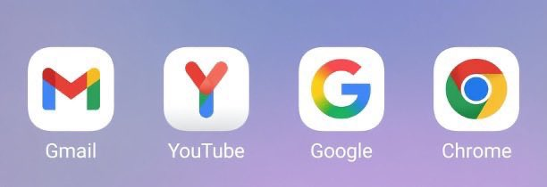

ジャンボ蜜柑
@JanboMikan
@Kiger_YuQing 老师你是真人吗，老师你能呼吸吗，老师你看得见吗（x）

咕咕雨
@Kiger_YuQing
教你如何被娃娃顷刻炼化： 1.老师你炸毛了 2.老师你大头颜色怎么和身子不一样啊 3.老师你出的是旺仔小乔吗 4.老师你是男孩纸吧 5.老师你身上怎么有褶皱 6.老师这个东西很好吃你要吃吗 7.老师对着镜头说几句话吧
8、老师这个猫猫你真的不抱一下吗
9、老师你jk定位线没拆（大声） https://t.co/lTjzsNYk3v